Works
Some of my projects
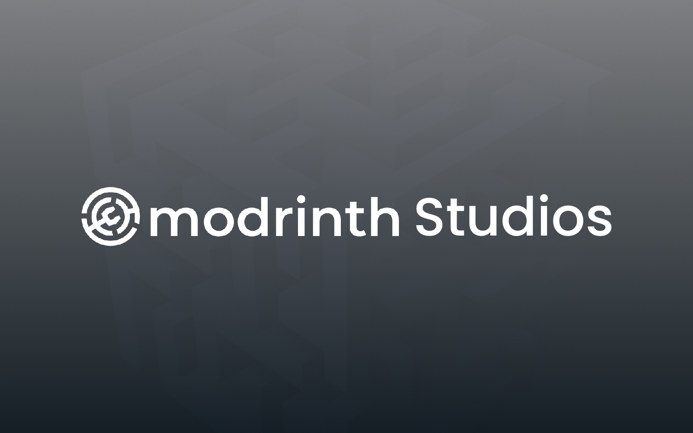
Modrinth Studios
A fork of the Modrinth launcher that I made because I wanted something a little more customizable. I removed the ads, added a bunch of customization options, and changed a few things to make it fit better with how I use the launcher.
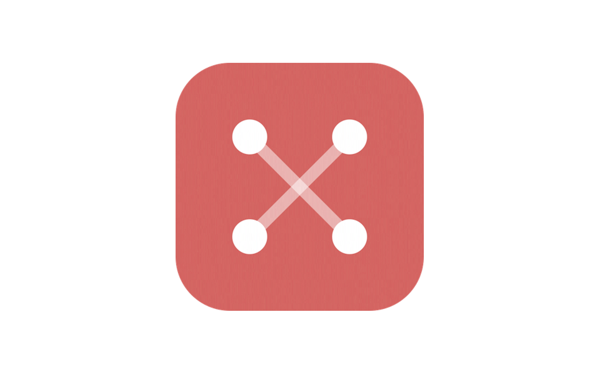
Helixnotes-Live
A small fork of Helixnotes that I made after really liking the original editor. I wanted a way to work on the same notebook with a friend in real time, so I added live collaboration to it.
Portfolio
The website you’re looking at right now. I built it from scratch with plain HTML, CSS and a bit of JavaScript, with the goal of keeping it simple while still making it feel like my own.
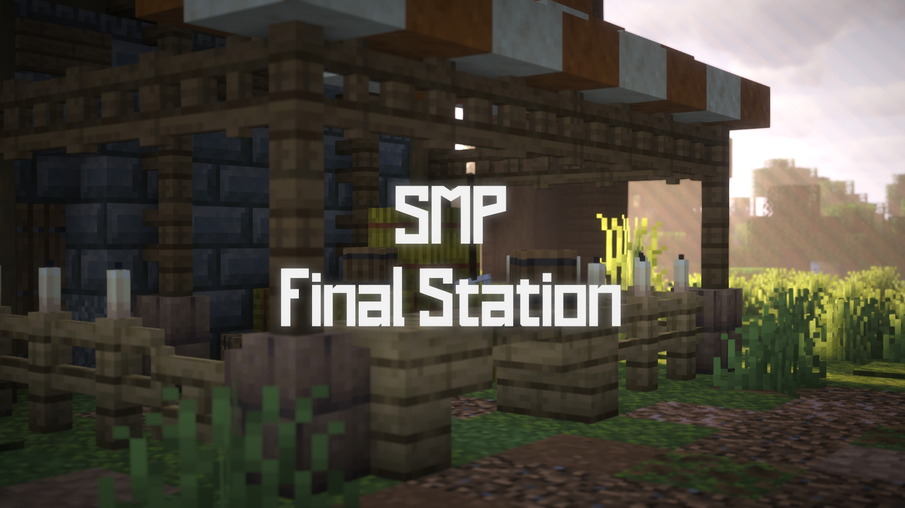
Minecraft Server Development
A bunch of development I’ve done for a Minecraft SMP I work on. This includes Skript, Datapacks and Resourcepacks, ranging from a creative planning world and custom items to crafting recipes and various smaller quality-of-life features.
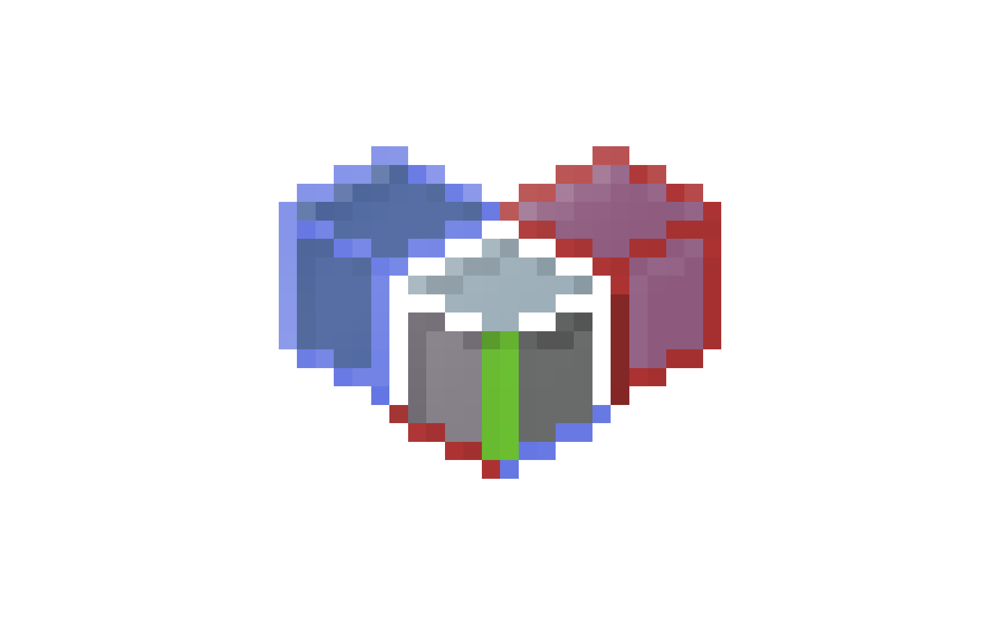
Litematica Material-List Viewer
A small Python project I made because I wanted to make building from Litematica schematics a little easier. It turns a material list into an interactive shopping list where you can simply check off the materials as you get them.
YouTube Downloader
A small Python project I made as a simple way to download YouTube videos or audio. It uses yt-dlp and has a simple Tkinter interface with live progress and a folder picker.
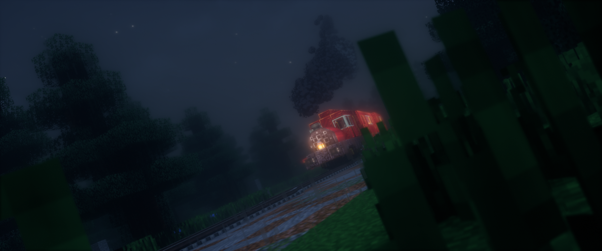
A Train to Yesterday
A project I made for school. Premiere Pro did most of the heavy lifting here, mainly because of the amount of filmmaking tricks I used. This is also the longest cinematic I’ve made so far.
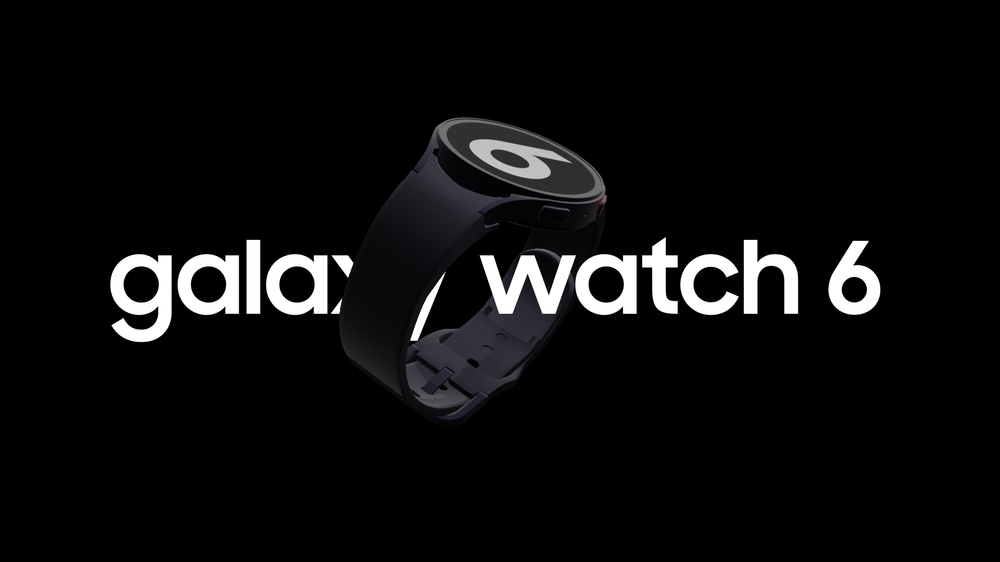
Galaxy Watch6 Advertisement
A Blender animation for an advertisement we had to make in school. Again, there was a lot of editing done in Premiere Pro, but I also had to use Blender for the first time, which was a pretty new experience for me.
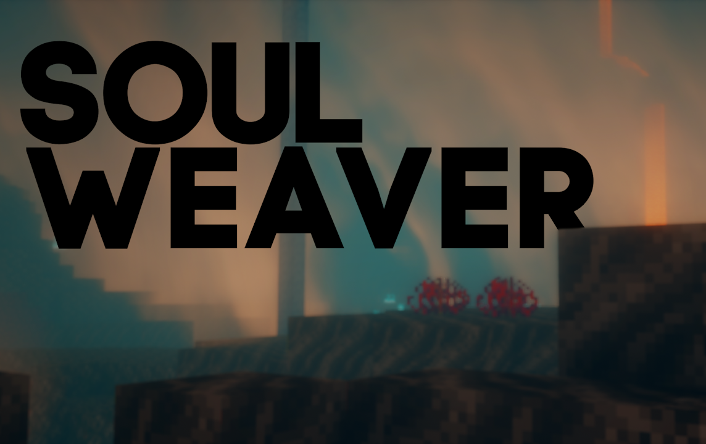
Music Video: Soulweaver - Goldeagle
A little cinematic I made for a friend back then, to showcase the really nice song he made for his Minecraft mod, which adds a bunch of music to the game.
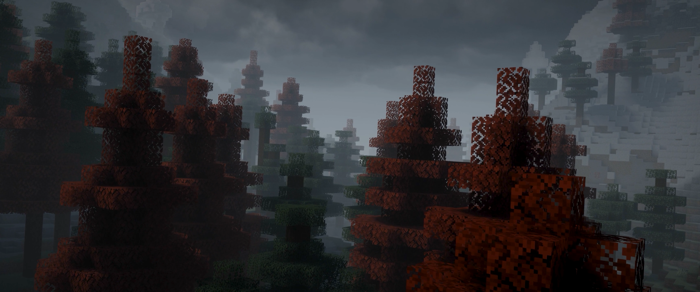
Forest
One of the first cinematics I made. I started making it pretty much out of the blue, and I don’t even really remember making it anymore. I still really like it to this day, though.

I Entered a World Lost to Time
Quite a large project I did with a friend of mine. We made it to showcase a pretty large roleplay server. I mainly worked on the sound design, but I also co-directed the entire thing.
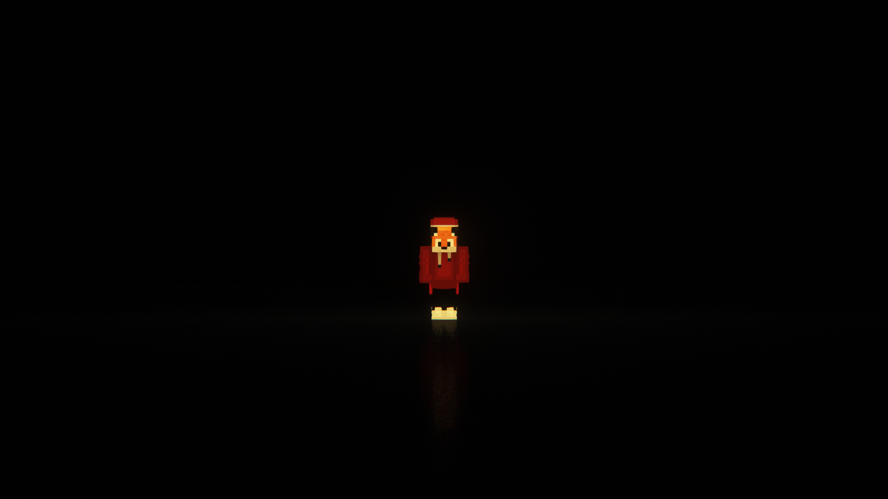
Portal
This was mainly a test to see if a “void” effect was possible, but it turned out really nice. I still think it’s one of the best cinematics I’ve made.